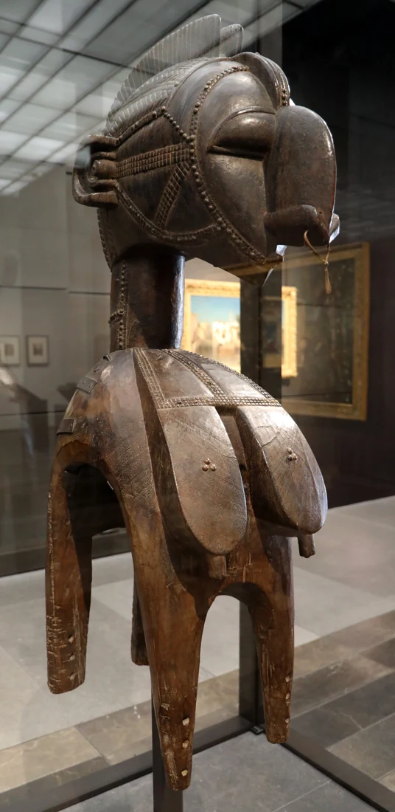
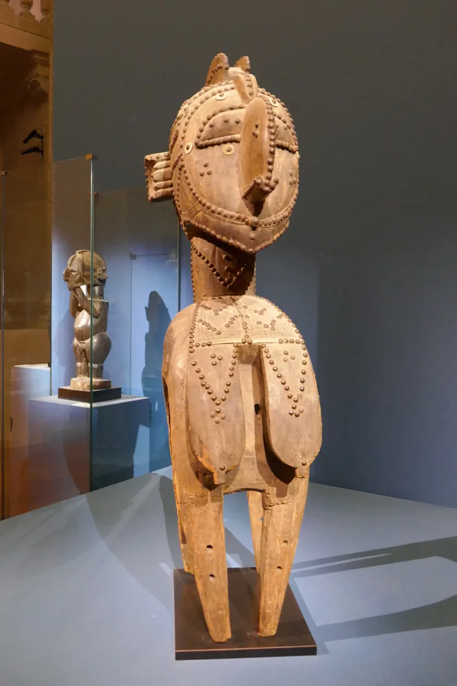
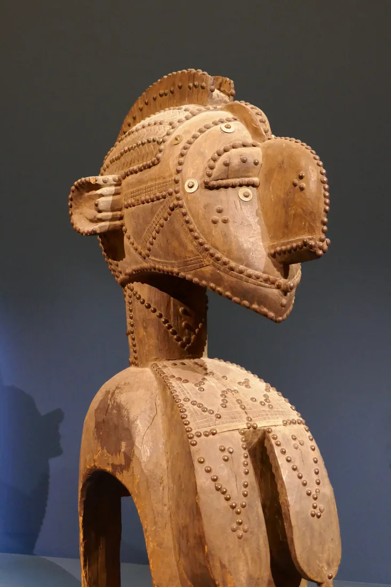

01 / Ink and thread
Two ways to wear it.
The tees and sweats carry the Nimba profile or the Guinée script in screen print. The polos and cap carry a smaller embroidered profile.
Shop all ten piecesCollection 01 / Guinea
From the Baga communities of coastal Guinea, a figure of strength and abundance. A story we carry with us.

01 / The debut collection
Screen-printed tees and sweats. Embroidered polos and caps. Four pieces from the debut collection.
“Some stories are carried on shoulders. Others are carried close to the heart.”

02 / The story
Carved in wood and lifted onto a dancer’s shoulders, D’mba appeared when communities came together for harvests, weddings, and other important occasions. Her profile carries a memory of the people and places that shaped her.
Read the story01 / Ink and thread
The tees and sweats carry the Nimba profile or the Guinée script in screen print. The polos and cap carry a smaller embroidered profile.
Shop all ten pieces“A small mark can hold a long memory.”
03 / Correspondence
Find answers about sizing, the shopping bag, and when online orders will open.
Visit Contact